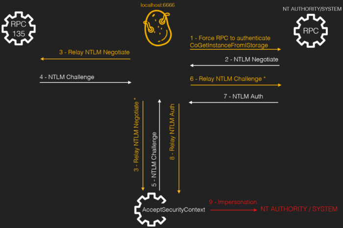

Rotten Potato (see Juicy Potato)
WARNING: NOT
TESTEDPrerequisite:Windows OS < Windows 10 1809
Windows OS <
Windows Server 2019
GitHub:
https://github.com/breenmachine/RottenPotatoNG•
Service accounts could intercept a SYSTEM ticket and use it to impersonate the SYSTEM user.
• This was possible
because service accounts usually have the “SeImpersonatePrivilege” privilege enabled.
1. Trick RPC to authenticate to the proxy with the
CoGetInstanceFromIStorage API call. In this call the proxy IP/Por t is
specified.
2. RPC send a
NTLM Negotiate package to the proxy.
3. The
proxy
relies the NTLM Negotiate to
RPC in port
135, to be used as a template. At the same time, a call to
AcceptSecurityContext is performed to force a local authentication. Notice that this
package is modified to force the local authentication.
4. & 5.
RPC 135
and
AcceptSecurityContext replies with a NTLM Challenge . The content of both
packets are mixed to match a local negotiation and is forwarded to the
RPC, step
6..
7.
RPC responds with a
NLTM Auth
package that is send to
AcceptSecurityContext (8.) and the
impersonation is performed (9.).
Bibliography:
•
https://jlajara.gitlab.io/others/2020/11/22/Potatoes_Windows_Privesc.html#rottenPotato